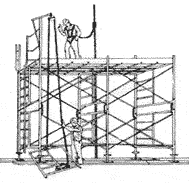

Ponteggi
I nostri lavori sono conformi alle linee guida stabilite dall'Ispesl e dal Ministero del lavoro per assicurare il più alto livello di sicurezza del montaggio, utilizzo e smontaggio dei ponteggi metallici necessari ad eseguire i lavori sui cantieri.
Le linee guida sono le seguenti:
- Linee guida per l'esecuzione di lavori temporanei in quota con l'impiego di sistemi di accesso e posizionamento mediante ponteggi metallici fissi di facciata;
- Linee guida per la scelta, uso e la manutenzione delle scale portatili;
- Linee guida per la scelta, uso e la manutenzione di dispositivi di protezione individuale;
- Linee Guida per esecuzione di lavori temporanei in quota con impiego di sistemi di accesso e posizionamento mediante funi.
